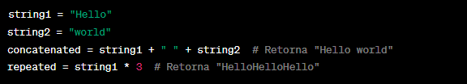
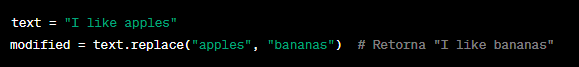

➤ Uma cadeia de caracteres, também conhecida como string em Python, é uma sequência de caracteres.
As strings são usadas para representar texto em um programa. Em Python, as strings são imutáveis,
o que significa que uma vez que uma string é criada, ela não pode ser alterada. Aqui estão algumas
informações sobre o uso de strings em Python:
◉ Criando Strings:
Você pode criar strings usando aspas simples (') ou aspas duplas (").
A escolha entre elas é geralmente uma questão de preferência pessoal. Exemplos:
◉ Acessando Caracteres:
Você pode acessar caracteres individuais de uma string usando indexação.
Lembre-se de que a indexação em Python começa em 0.
◉ Operações com Strings:
Python oferece várias operações que você pode realizar em strings, como concatenação e repetição.

◉ Formatando Strings:
Você pode formatar strings de várias maneiras, incluindo f-strings (a partir do Python 3.6), formatação com % e o método format().
Exemplo de f-string:
◉ Métodos de String:
As strings em Python têm muitos métodos úteis que você pode usar para realizar várias operações,
como encontrar substrings, verificar se uma string começa ou termina com algo específico, etc.
◉ Obter o Comprimento da String:

◉ Fatiar Strings:
◉ Converter para Maiúsculas ou Minúsculas:
◉ Remover Espaços em Branco:
◉ Dividir Strings em Substrings:
◉ Substituir Substrings:

◉ Verificar se uma String Começa ou Termina com um Determinado Texto:
◉ Concatenar Strings:
◉ Encontrar a Posição de uma Substring:
◉ Contar a Ocorrência de uma Substring: